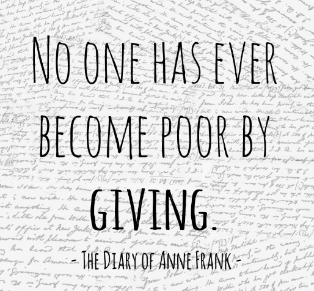
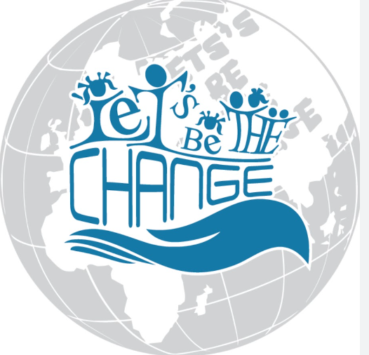

Welcome to HopefulHearts. - Empowering Lives, Eradicating Poverty.
At HopefulHearts, we believe that every individual deserves a life of dignity, free from the burdens of poverty.
We extend a warm welcome to you, our valued visitors, and express our heartfelt gratitude for showing interest in our cause.
Together, we can create a brighter, more equitable future for all.
Our mission is to alleviate poverty and uplift the lives of those in need.
We strive to break the cycle of poverty by addressing its root causes and providing sustainable solutions.
Our vision is a world where no one is left behind, where all individuals have equal access to opportunities and resources.
OurWebsiteName was born out of a shared passion for creating positive change.
The journey began when our founders witnessed the hardships faced by communities living in poverty.
This experience ignited a spark of compassion and determination to make a difference.
Drawing from our personal experiences and expertise, we united to form an organization that could be a beacon of hope for those in need.
You can be a part of our journey too. Your involvement, no matter how small, can create a ripple effect of change.
Whether through donations, volunteering, or spreading awareness, you have the power to uplift lives.
Join us in our mission to eradicate poverty and build a more equitable world.